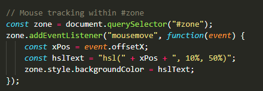

Zone chromatique expérimentale
Dans cette zone, on utilise le langage JavaScript pour récupérer la position instantannée du pointeur de la souris.
Cette position permet de faire évoluer en conséquence la couleur de l'arrière plan.

Dans cette zone, on utilise le langage JavaScript pour récupérer la position instantannée du pointeur de la souris.
Cette position permet de faire évoluer en conséquence la couleur de l'arrière plan.